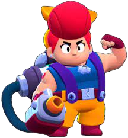
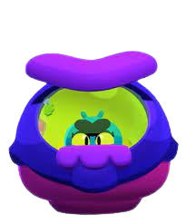

Te presentamos a las estrellas del juego, los BRAWLERS. Junto con su imagen, encontraras un detalle con sus características.
Shelly
Shelly es el brawler que nos dan al comenzar el juego. Tiene una salud moderada y una eficacia muy buena a corta distancia gracias a su escopeta de cinco perdigones. Su super puede derribar varios obstáculos y aturdir a los enemigos.
Nita
Nita se desbloquea alcanzando 15 trofeos. Su salud es moderada y su ataque de ondas de choque le permite golpear varios enemigos, pero lo más notable es cuando hace el super e invoca a un oso.
Colt
Vas a tener que conseguir 60 trofeos para hacerte con este “vaquero”. Es capaz de hacer bastante daño a larga distancia con sus dos pistolas, pero tiene poca vida. Cuando activa el super, además de arrasar con los enemigos, puede destruir obstáculos.
Bull
Conseguir al doble de Elvis te va a costar 250 trofeos. Si quieres un brawler con mucha salud y capacidad de fuego tendrías que pensar en Bull. Su super es una embestida que arrasa con todo a su paso.
Brock
Cuando no esta haciendo volar todo en la batalla con sus cohetes, esta brillando en la pista de baile. Con un costo de 100 trofeos, este francotirador de cohetes comenzara con uno hasta una lluvia en el super. Su lentitud y poca salud hacen que lo ideal sea siempre mantener una buena distancia.
El Primo
El personaje ideal para quienes gustan de la lucha libre. Cuando logra acercarse lo suficiente a sus enemigos causa mucho daño con sus golpes, su buena salud lo ayuda a liderar el frente, y salta “desde la tercera cuerda” para hacer el super. Uno de los dos personajes, el otro es Ash, que no muestra su cara.
Barley
Mejor no hagas enojar a este mozo porque va a empezar a tirar botellas por todos lados. Dependiendo si eres amigo o enemigo, puede hacer que vayas más lento y causar daño o curar. Prepárate para una lluvia de botellas al momento del super, pero siempre manteniendo la distancia.
Poco
Poco es un personaje muy versátil ya que es capaz de cubrir un buen abanico de distancia con sus ataques musicales y además puede curarse a sí mismo y a sus compañeros haciendo que ganes muchas batallas.
Rosa
La boxeadora botánica tiene mucha salud y la capacidad de hacer mucho daño a corta distancia con su combinación de golpes. Sus ataques pueden pasar a través de enemigos, así que puede golpear a más de uno al mismo tiempo. Gracias a su salud, y en las condiciones adecuadas, puede derrotar a los asesinos.
Jessie
Luego de obtener 500 trofeos podrás desbloquear a este personaje. Sus ataques siempre rebotaran hacia el enemigo que aún no fue golpeado, y el super (despliega una torreta) puede usarse tanto para atacar como para defender.
Dinamike
Este minero se divierte lanzando cartuchos de dinamita, pero ten cuidado de mantener la distancia porque no tiene mucha vida. Su super es un gran barril bomba que causa mucho daño. Necesitas 2000 trofeos para desbloquearlo.
Tick
Necesitas 4000 trofeos para hacerte con este personaje, pero cuidado con su corta salud. Lo mejor es huir de los enfrentamientos de corto alcance y ocultarte detrás de muros y escondites. Es bueno para mantener alejados a los oponentes.
8-Bit
Es uno de los personajes con mayor cantidad de vida, con gran fuerza de daño, pero también muy lento. Ideal para quien quiera jugar con un tanque defensivo y de apoyo, el super es una torre que aumenta el daño de sus compañeros.
Rico
La característica principal de este personaje es que sus ataques rebotan, pero tiene poca vida. Por eso tenes que aprovechar los muros de los mapas para causar el mayor daño posible y evitar el fuego enemigo.
Darryl
Este barril pirata tiene mucha vida y dos escopetas listas para disparar en todas las direcciones. También puede caminar sobre el agua cuando activa su super.
Penny
Esta divertida pirata lanza bolsas de dinero que al romperse salen monedas, causando daño también alrededor. Tiene una buena salud y el super puede golpear enemigos detrás de las paredes.
Carl
Este minero lanzara su pico como boomerang, pero necesitas mucha suerte para obtenerlo ya que solo sale con cajas de botín. El super lo hace girar como loco en su carrito duplicando su velocidad.
Jacky
La tercera integrante del grupo de los mineros usa su martillo neumático para atacar. Tiene una buena cantidad de salud y es muy buena en la corta distancia, pero también muy lenta. Su taladro puede atacar a los enemigos detrás de las paredes.
Gus
Este chico es fanático de los animales hechos con globos. Tiene una buena cantidad de salud, y el super puede crear un escudo alrededor de un aliado o de sí mismo.
Bo
Es el último brawler que se desbloquea con trofeos (3000), es capaz de aguantar bien el daño y ataca a distancia con su arco. Su super es bueno para defender áreas críticas durante las partidas. Junto con Nita y León, son los personajes que representan animales.
Emz
Te presentamos a la zombie rebelde que pasa la mayor parte del tiempo en redes sociales. Gracias a su considerable salud puedes elegir si acercarte para atacar o hacerlo desde posiciones más seguras. Su super hace que recupere vida según el daño que hace, lo que la convierte en un personaje que costara derrotar.
Stu
A este doble de riesgo, con gasolina en las venas, le encantan las entradas impresionantes y quemar el asfalto de la partida.
Piper
No te dejes engañar por su aspecto amable y de paseo dominical. Cuanto más lejos del objetivo más daño hará, además tiene poca salud por lo que conviene que te mantengas lejos.
Pam
Es un buen personaje sanador, pero su ametralladora de tuercas y tornillos no es muy precisa. Si tiene buena eficacia contra grupos y a media distancia.
Frank
Este simpático monstruo ataca con un súper martillo que al golpear emite una onda expansiva que golpea a otros objetivos, pero a cambio tiene un movimiento de ataque lento.
Bibi
Esta bateadora con buena salud agitara su bate en un arco a medida que se mueve, lo que hace más difícil para los enemigos cercanos esquivar el golpe. Con su barra llena puede hacer un home run y noquear a los oponentes.
Bea
La abejita robótica es un buen complemento para personajes con mucha salud, algo que a ella le falta. Con su largo alcance y rápida recarga los golpea a distancia mientras los demás avanzan.
Nani
Este robot tiene poca salud, pero es capaz de causar mucho daño a distancia. Cuando realiza el super e invoca a Peep, un dron volador, inflige un gran daño a los enemigos.
Edgar
Un adolescente enojado en crecimiento. A pesar de su baja vida y el alcance más corto del juego, posee robo de vida, daño alto y velocidad de recarga super rápida.
Griff
Este cajero tiene una salud moderada y un alto potencial de daño disparando 3 oleadas de monedas (eso sí, del frasco de las propinas). Sus ataques causan más daño a corta distancia y puede curarse así mismo, lo que hace que sea difícil derrotarlo.
Grom
Este vigilante de castillo, con salud moderada, tiene en su walkie-talkie a su mejor amigo y en los niños su mayor temor, por eso oculta su cara detrás de la máscara.
Bonnie
La hermana pequeña de Janet tiene mucha salud y un gran alcance, es famosa en el parque por su truco más atrevido, ¡que la disparen en un cañón llamado Clyde.
Mortis
El vampiro tiene una pala, la cual usa para atacar y desplazarse a la vez. Mortis tiene una vida relativamente alta, daño moderado y una velocidad de recarga increíblemente lenta. Si es rápido para desplazarse y tiene habilidades de autocuración.
Tara
La ilusionista, con una cantidad moderada de vida, lanza cartas de tarot para atacar. Puede invocar a tres de sus sombras para atacar o curarse ella misma.
Genio
Puede actuar como sanador para todo su equipo, además de lanzar ataques desde su lampara mágica. Su super tiene prioridad sobre todas las habilidades activadas durante el juego.
Max
Esta heroína de acción tiene una salud media, pero una velocidad de ataque muy rápida. Es ideal para atacar disparando y retirarse, además es la única que puede aumentar su velocidad y la de sus aliados.

Señor P
Un botones de hotel malhumorado que lanza valijas explosivas, perfecto para el combate a distancia. Con su super invoca a pingüinos robóticos para que lo ayuden en combate.
Sprout
El simpático cyborg con penacho de planta lanza bombas rebotadoras de semillas. No es la opción ideal para estar en el centro del combate, pero es útil desde larga distancia y si se usan las coberturas de los escenarios.
Byron
Su baja salud lo hace un buen complemento, ya que sus dardos pueden dañar al enemigo como curar de manera rápida a sus compañeros desde una distancia segura.
Squeak
Este alienígena tiene buena salud, pero un daño moderado, y su juego favorito es lanzar la bola pegajosa…que explota después de un tiempo.
Gray
Como todos los mimos no habla, sino que usa sus movimientos para expresarse. Como personaje de apoyo, su super es muy útil creando portales que permiten escapar o atacar por sorpresa.
Willow
A pesar de su corta salud y daño moderado, es capaz de controlar a un enemigo con su super. Esto puede ser usado tanto para alejarlo como para atraerlo y emboscarlo.
Spike
A pesar de su aspecto amigable, este cactus es muy peligroso. Su poca salud hace que su mejor opción sea la larga distancia, sus espinas cubren una amplia zona y además tiene habilidades curativas.
Crow
Este lanzador de cuchillos tiene poca vida, pero lo compensa con mucha velocidad de movimiento y recarga.

leon
Considerado por muchos como el mejor personaje del juego, este niño disfrazado de camaleón puede volverse invisible para acercarse y vaciar todo su arsenal sobre un enemigo. Su habilidad es tanto útil para atacar como para defenderte.
Sandy
Sandy es un personaje muy bueno para atacar y ser una molestia constante para nuestros enemigos. Además, ofrece un fantástico apoyo a nuestros aliados. Su súper puede usarse tanto para la ofensiva como la defensiva.
Amber
Este personaje amante del fuego tiene una salud moderada y una gran cantidad de daño. Ataca disparando una llamarada continua y de largo alcance.
Meg
Meg es el tercer miembro del trío de Max y Surge y es una chica inteligente que repara máquinas expendedoras.
Chester
Chester es un bromista caótico muy molesto, sobre todo con Mandy. Siempre empieza con un Súper aleatorio que va cambiando después de cada uso.
Gale
Es el primer brawler de rareza cromática y aunque tiene bastante salud, no produce demasiado daño. Su uso se recomienda para enfrentamientos a distancia.
Surge
Es un luchador y su ataque consiste en lanzar bebidas energéticas que se dividen al entrar en contacto con su objetivo.
Colette
Colette se cobra la salud de los rivales, su ataque principal consiste en disparar proyectiles que infligen más daño cuanta mayor es la salud de los objetivos.
Lou
No te confíes de este simpático vendedor de helados, cuándo menos lo esperes te va a tirar un helado y vas a quedar tiritando.
Ruffs
Aunque ladre ordenes, es "un buen chico". Su instinto canino hace que meta su nariz siempre que haya un juego de búsqueda.
Belle
La líder de “La Banda de Brazo de Oro” tiene una salud bastante baja pero mucha habilidad con respecto al daño y su alcance.

Buzz
El socorrista de “Velocirápidos” tiene una salud moderadamente alta, una gran cantidad de daño y una gran movilidad debido a su súper y su rápida velocidad de movimiento, pero un rango de ataque corto.
Ash
El encargado de limpieza del patio trasero del Castillo se enfurece cuanto le toca limpiar, para protegerse de la basura y las ratas usa su escoba como espada y un tacho como escudo.
Lola
La gran estrella de cine de Brawlywood usa su estola de zorro para lanzar joyas a larga distancia…no le digas que es solamente una guía turística.
Fang
Un artista marcial que para lograr entrar en la industria del cine trabaja en uno. Fang tiene mucha salud, una gran producción de daño y una velocidad de movimiento rápida.
Eve
Eve es una pequeña pulga, una madre amorosa que viaja en una nave espacial tratando de encontrar un lugar cálido y esponjoso para sus bebés.
Janet
Janet es la hija adoptiva de Stu y le encanta el mundo del espectáculo. Es cantante y la estrella del espectáculo de acrobacias. Tiene una salud y daño moderado.
Otis
Otis es una criatura misteriosa que vive en las profundidades de Starr Park y expresa su arte callejero en cualquier pared que ve. Siempre va acompañado por su compañero Cil, una estrella de mar.
Sam
El musculo detrás del cerebro en “La Banda del Brazo de Oro”, tiene buena salud y un daño moderado. Y como exempleado de una fábrica, un enojo bien grande con todos los robots.

Buster
Es un brawler tipo tanque que puede proteger a sus compañeros de equipo. Es el proyeccionista en el cine de Starr Park, donde trabaja con su mejor amigo, Fang.
Mandy
La dueña del puesto de azúcar de Starr Park tiene poca salud, mucho daño y mucho alcance…como los dulces que vende.
R-T
Uno de los robots de Starr Park, disponible como parte de la Temporada #17 “Misterio en Starr Park”. En su forma original tiene una buena salud, velocidad normal, poco daño y largo alcance, lo opuesto a su forma alternativa.